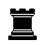

The chess coach that knows your weaknesses
ChessForge watches you play, learns the mistakes you repeat, and coaches you through every move — live, before you blunder. Not after. Bring your chess.com games and it knows them before your first move here.

GM Forge
He sits beside you while you play. He points at the square that matters, asks the question you should have asked yourself, and turns the mistakes you actually make into drills. Every move he names is checked against Stockfish before he says it — he does not guess, and he does not invent lines.
Have a look around before you sign up
Press any of the four. The screen changes and the arrow points at the part that does the work.
His knight just landed on g4. What does it hit?
Mark the moves you are choosing between.
Ask me anything about this position.
Why was that bad?His bishop on c5 and his knight on g4 both hit f2. Attacked twice, defended once.
Username only — no password.
Coaching that happens during the game
Bring the games you have already lost
Your chess.com username. Not a password — there is no login to their site and no permission screen. Thirty games read in about ten seconds, every move graded, and it arrives knowing what you get wrong. Skip it if you like; you just start colder.
Play, and get interrupted
A normal game against a bot at your level. The difference is that when a move is about to cost you something, the board stops. Not afterwards, not in a report — at the moment your hand is on the piece.
Name two moves before you play one
This is the part people remember. Draw an arrow for each move you are weighing, and GM Forge plays both of them out on the board so you watch what each one runs into. Then he asks which you would rather have. He does not tell you. He never tells you.
The mistake becomes the drill
Every position you got wrong comes back — tomorrow, then in three days, then in a week — mixed in with other kinds so you have to work out which problem you are even looking at. That mixing is the part that makes it stick.
Watch the same mistake stop happening
Your weakness profile is built only from games nobody helped you with, so it stays honest. When a pattern goes quiet, it drops out of rotation and something else takes its place.
Built around your weaknesses, not generic drills
Everything below is running in the app right now. This is what playing without it costs you.
Live move coaching
He speaks on every move — points at the square, names the threat, asks what you think before you commit.
Without it: you find out what went wrong after the game, when there is nothing left to do about it.
Your Thinking Profile
A running read on how you go wrong — board vision, threat blindness, impulse, calculation depth — built only from games you play unaided, so it stays honest.
Without it: you know your rating and nothing about why it is stuck.
Puzzles from your own blunders
The tactics you miss become the tactics you drill, alongside fresh positions mined to train the same habit so you are never solving the same board twice.
Without it: puzzle rush on positions that have nothing to do with the way you lose.
A review that is an actual review
Every move graded, both players named, the board the right way up for the side you played, and a chat that knows which position you are looking at. Leave it to drill something and it puts you back on the move you left. Ask it about a piece, a square, or a move.
Without it: a list of centipawn numbers you scroll past.
He asks before he answers
A coached turn is four steps, not a verdict. Read the position, mark the moves you are choosing between by drawing them on the board, watch him walk each one out so you see what it runs into, then play. He never names the move for you — if you are stuck, "I don't know what to play here" opens a checklist that narrows it down without giving it away.
Without it: you are told the answer, agree with it, and find nothing has changed next game.
Start with the games you already played
Connect chess.com with your username alone — no password, no permissions, we could not log in as you if we wanted to. It reads your last thirty rapid and blitz games, grades every move, and your weaknesses, puzzles and drills are built from them before you have played a single game here. Bullet is skipped on purpose: a one-minute game's mistakes are clock, not habit. Your chess.com rating stays yours — imported games never move anything measured here.
Without it: a new coaching tool knows nothing about you for the first week.
Start free. Try Grandmaster free for three days.
Free
Enough to see whether he is any good.
- One coached game a day
- Live coaching on every move of it
- Import your chess.com games
- Five puzzles a day from your own games
- Basic weakness read
Grandmaster
Free for three days, then the founding-member rate — which stays at this price for as long as you keep the subscription running. Card required, nothing charged until day 4, cancel any time before then.
- Unlimited coached games — no daily gate
- The full Thinking Profile, with trends over time
- Unlimited puzzles, plus fresh ones mined for your habits
- The full move-by-move review, and Ask GM Forge on any position
- The five-stage drills, rebuilt from the positions you got wrong
- Trap Trainer — a bot that steers into your weaknesses on purpose
- Every board and piece set in the shop
Cancel any time, from the app, in two clicks.
I built this because my own games kept ending the same way, and I could never see it happening while it happened. My rating has gone up since I started using it. That is one person’s experience, and it is the only one I can promise you is real — so it is the only one on this page.
There are 31 players here. When enough of them have written a review, theirs will be on this page instead of mine.
Questions
How is this different from a regular engine?
An engine tells you the best move after you have already played. ChessForge speaks before you commit, and what it says is built from the mistakes you personally keep making rather than from the position alone.
Does it get better the more I play?
Yes. Every unaided game updates your Thinking Profile, and the drills and puzzles are drawn from it, so the coaching narrows onto your habits as it learns them.
What rating range is this for?
Beginners, roughly 300–1000. You should know how the pieces move; you do not need to know anything else. This is aimed squarely at the stage where games are decided by pieces going missing rather than by deep plans — it is not master preparation.
Why does the free plan make me play one game on my own?
Your rating, your accuracy and your Thinking Profile are read only from games you play without help — coached ones do not count, because the coach is doing part of the work. One unaided game a day keeps the measurement honest. Grandmaster removes the gate.
Do I have to give you my chess.com password?
No, and there is nothing to give. The import asks for your username and reads the public record of your games through chess.com's own public API. There is no login, no password and no permission screen — we could not sign in as you if we wanted to. Disconnecting removes the account and everything built from it.
Does importing my chess.com games change my rating here?
No. Imported games change what you are shown — your weaknesses, your puzzles, what the coach watches for — and never what you are scored. Your play strength here is read only from unaided games played in ChessForge, and the daily gate stays exactly as it is.
Does it work on my phone?
Partly, and it says so rather than pretending. Dashboard, Training, Puzzles and Shop all work on a phone, and you can tap a piece to see its moves and tap a square to play it. Play & Coach and Analysis need a real window — they are a board plus something you read beside it, and both have to be visible at once, so on a phone those two say to come back on a laptop.
Can I sign in with Google?
Yes. If you already have an account under the same email address, signing in with Google asks for that account's password once to link the two, and after that Google alone is enough. Signing in with Google will never create an account by itself — if there is no account for that address it tells you to make one.
Can I cancel any time?
Yes. Cancel from the app in two clicks. No contract, no email required, and you keep access until the period you have paid for runs out.
Who is behind this?
One person. ChessForge is built and run by a solo founder, which is why the email in the footer reaches an actual human rather than a ticket queue.
Play your next game with a coach who already knows what you will get wrong
Start playing free →Free to start · no card required